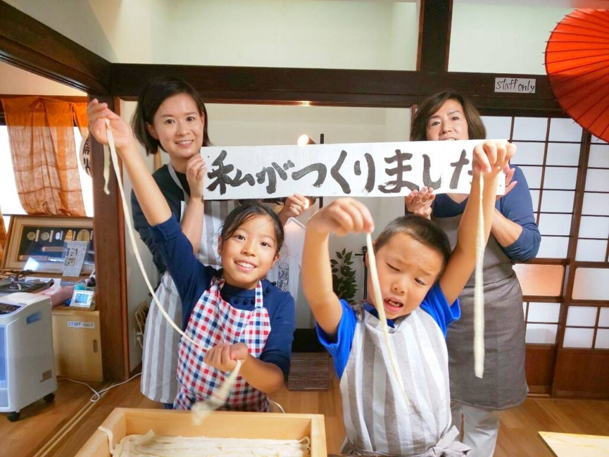
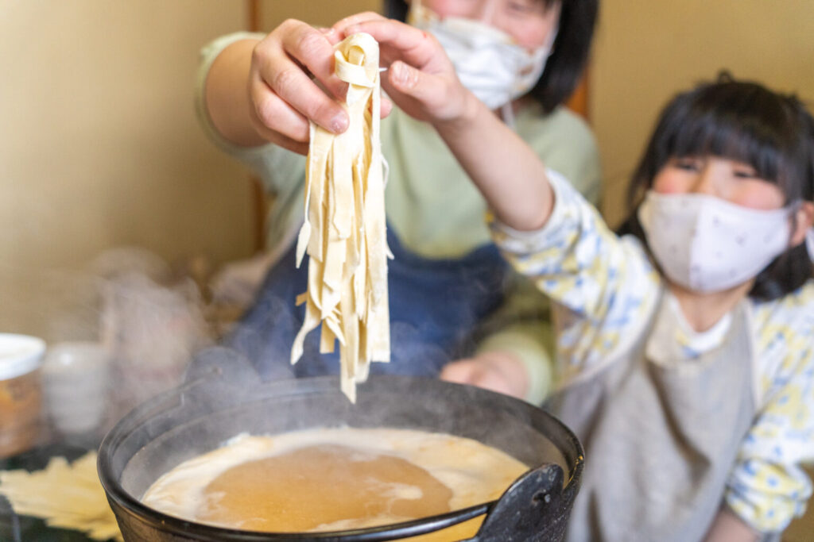
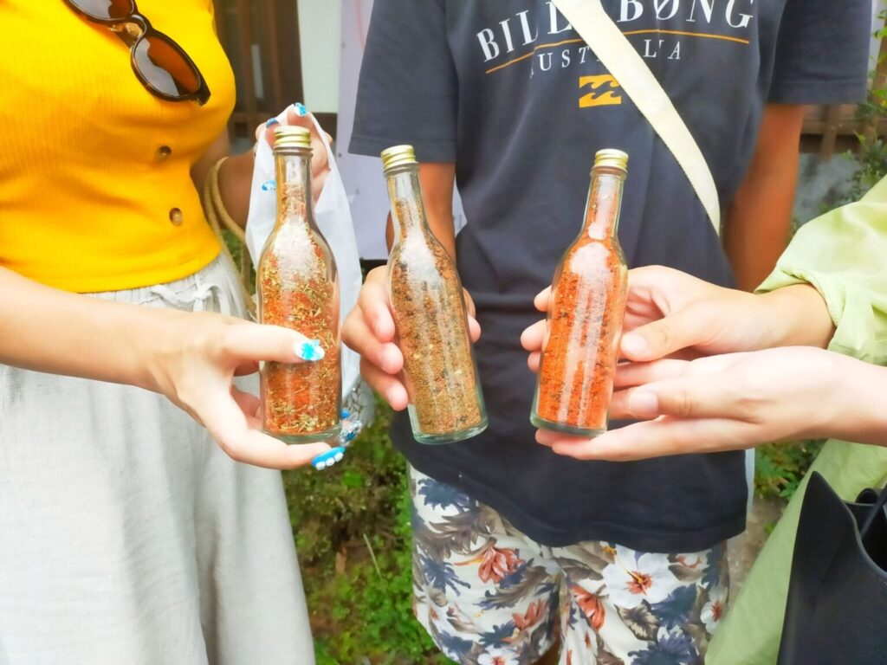

No-Meal Experience
Would you like to take home the noodles you made as a souvenir from your Yamanashi trip?
At the Fujika Experience Workshop, we also offer no-meal experiences for those who do not need a meal.
We provide take-home handmade noodle-making and shichimi spice-making experiences, which can be customized to suit different situations and requests. Feel free to consult with us.
Features of the No-Meal Experience
Here are the features and recommendations of the Fujika souvenir-making experience.
Same Experience as the Regular Course

Although a meal is not included, the experience itself is the same as the regular course, so you can fully enjoy it.
Two Servings of Noodles

In the regular experience course, each participant makes a single serving, but in the take-home experience, you will make two servings.
Enjoy It at Home
After returning home, you can enjoy the taste of your handmade udon with your family and friends, making it the perfect souvenir.

Shichimi & Suridane Spice-Making Experiences Available
You can also experience making Yamanashi’s new specialty seasonings, suridane chili and shichimi.

Dyeing Experience Also Available
At our adjacent sister store, you can also participate in a dyeing experience.

Recommended for:
- Those who want to try the experience but have limited time
- Those who have already made meal reservations
- Those who want to create a souvenir
- Those interested in dyeing experiences
| No-Meal Noodle-Making Experience Plan | |
|---|---|
| Take-Home Noodle-Making Experience Serves 2 |
¥2,500 |
| Take-Home Noodles + Suridane Spice-Making Experience Set Serves 2 + Suridane Spice-Making Experience |
→¥3,980 |
| Take-Home Noodles + Shichimi Spice-Making Experience Set Serves 2 + Take-Home Shichimi Spice-Making Experience |
→¥3,980 |
Frequently Asked Questions
These are some common questions we receive from customers. If you have any other questions or concerns, feel free to contact us.
- How long does the experience take?
- The noodle-making experience takes about 2 hours, including meal time. The dyeing and spice-making experiences take about 40 minutes each.
- Can I participate alone?
- Yes, solo participants are very welcome.
- Is there an age restriction for the souvenir-making experience?
- There is no specific age restriction for the noodle-making experience.
- What does the fee include?
- The souvenir-making experience fee includes containers, flowers (for decoration), and a take-home bag. There are no additional fees.
- Can I visit without a reservation?
- Depending on availability, we may be able to accommodate walk-ins, but we generally recommend making a reservation by the day before.
- Do I need to bring anything?
- No special items are required, but some materials like oil and wax may stain clothing. We recommend wearing clothes that you don’t mind getting dirty. Aprons are available for rent.
- Do you accept credit cards?
- Yes, we accept major credit cards and PayPay.